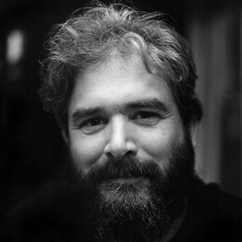
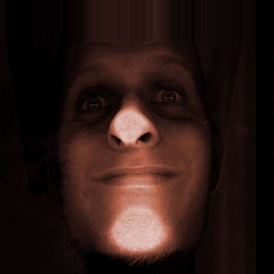
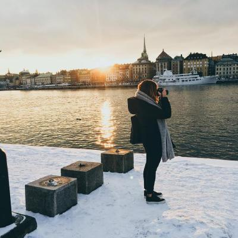
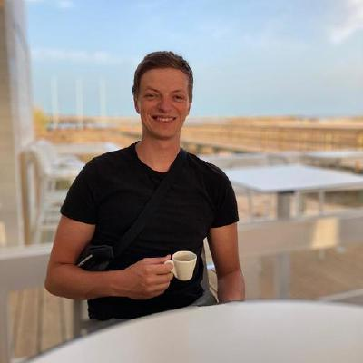

Course description
Web Design gaat over het ontwerpen en testen van Interactie. Het voordeel van een Frontend Developer (en Web Designer) is dat die techniek begrijpt, kan toepassen én verstand heeft van UX en design. Als je Web technieken begrijpt kun je je ideeën snel prototypen en testen met echte gebruikers, in een browser. Je kan dan aanpassingen doorvoeren, uitproberen en weer testen ...
In het vak Web design gaan we dingen ontwerpen voor echte mensen. Is er goede interactie? Kan je 'mens' je product op een prettige manier bedienen? Wat voor principes heb je gebruikt en getest? En zit er wel _nonsense_ in?
Ontwerp opdracht
Voor dit vak krijg je een ontwerp-opdracht die je gaat maken voor 1 mens. Een echt mens. Je moet je ontwerp 3 keer testen. Door te testen en te itereren ga je je ontwerp verbeteren. Uiteindelijk heb je een ontwerp dat exclusief gemaakt is voor 1 persoon. Een _exclusive design_ ... Wie is deze persoon dan voor wie je dit gaat maken? Wat vindt deze persoon leuk of juist niet? En hoe bedient deze persoon een computer?
Bekijk hieronder het gemaakte werk voor Marie van Driessce, Larissa Klaassen, Roger Ravelli en Marijn Meijles.
Exclusief ontwerp voor Marie van Driessche
Marie is Doof (met een hoofdletter inderdaad, dat betekent dat ze zichzelf als Doof identificeert, wat simpelgezegd betekent dat haar eerste taal Nederlandse Gebarentaal is). Je zult begrijpen dat Marie moeite heeft met dingen waar geluid een grote rol speelt.
 Coen Mathijssen
Coen Mathijssen- Gijs Laarman
- Giovanni Kaaijk
- Joan Padolina
- Kris Kuiper
- Leroy van Biljouw
- Marissa Verdonck
- Mohamad Al Ghorani
- Reinier van Limpt
- Tim Terwijn
- Wessel Smit
Exclusief ontwerp voor Larissa Klaassen
Larissa is blind. Ze maakt gebruik van een brailleregel, en van een screenreader. Je snapt dat heel veel van de gangbare design patterns niet optimaal werken voor haar omdat ze 100% vanuit een visueel oogpunt ontworpen zijn. Larissa is student aan de HvA. En daarnaast is ze topsporter. Ze is laatst tweede geworden op het WK baanwielrennen.
- Damian Veltkamp
- Heralt Levant
- Jennifer Slagt
- Kyle Bot
- Lars Breuren
- Manouk Kappé
- Robert Hoekstra
- Stefan Gerrits
- Tomas Stolp
Exclusief ontwerp voor Roger Ravelli
Roger is sinds een jaar of tien langzaam blind aan het worden. Inmiddels is hij op het punt beland dat hij de overstap aan het maken is van *inzoom-software* naar *screenreaders*. Tot voor kort was hij een specialist op het gebied van duurzame energie. Maar omdat hij geen technische tekeningen, ingewikkelde tabellen, of grafieken meer kan lezen, houdt dat op.
- Bas de Greeuw
- Kevin K Kreule
- Lennart de Knikker
- Max Weijers
- Nick Meijer
- Ramon Meijers
- Simone van Zeijl
- Sjors Eveleens
- Tabish Nanhekhan
- Wouter van der Heijde
Exclusief ontwerp voor Marijn Meijles
Marijn heeft een motorische stoornis. Hij gebruikt zijn computer dus anders dan wij. Hij heeft veel moeite met fijne motoriek. Hij gebruikt zijn toetsenbord om te navigeren, en in de Accessibility settings van zijn Mac heeft hij Sticky Keys aan staan.
Lecturers
-  Vasilis van Gemert
-  Koop Reynders
-  Chelsea Doeleman
-  Menno de Vries
Program
This course is given at Communication and Multimedia Design, a design bachelor focused on interactive digital products and services. CMD is part of the Faculty of Digital Media and Creative Industries at the Amsterdam University of Applied Sciences.